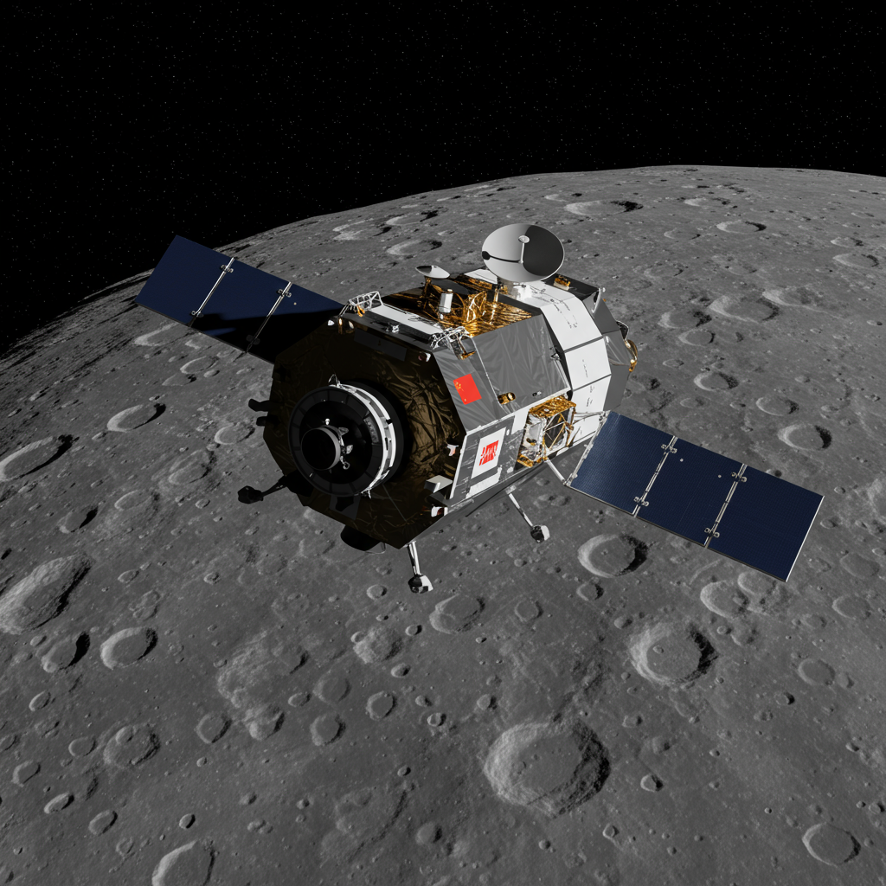

Chang´e 5T1 (CHINA, 2014)
Nombre en clave: Chang e 5T1
Agencia: CNSA Administracion Nacional del Espacio en China
Fecha de lanzamiento:23 de Octubre de 2014
Centro de lanzamiento:Xichang satelite launch center
Tipo de la misión:Prueba de retorno lunar, Sin tripulacion
Lanzador:Long March CZ3C
Objetivo de la misión
Probar la capsula de la entrada atmosferica que seria utilizada en la mision CHANG´E 5, Enviar una nave alrededor de la luna y regresarla a la tierra a unos 11 km/S Usando la maniobra llamada SKIP REENTRY ( Reentrada con rebote).
Detalles de la Mision
La Change 5 Orbito la luna y retorno en 8 dias,Libero una capsula de retorno que reingreso con exito el 31 de octubre del 2014 Aterrizando en Mongolia Interior mientras tanto el modulo de servicio la parte principal de la nave NO regreso,se quedo en el espacio y realizo una serie de maniobras fascinantes.
Impacto histórico
Fuel la primera mision china en probar un retorno lunar completo,auque sin traer muestras. Su Capsula era casi identica al Chang´e 5 Usada en el 2020 Algunos Astronomos occidentales confundieron el modulo de servicio con el FALCON 9 (2022).
"SI,LA NAVE CHINA PUDO HABER DEJADO SU FIRMA EN LA SUPERFICIE LUNAR SIN QUE NADIE LO NOTARA POR AÑOS . — Archivo SIGMA ULTRA
Regresar a Misiones No Tripuladas